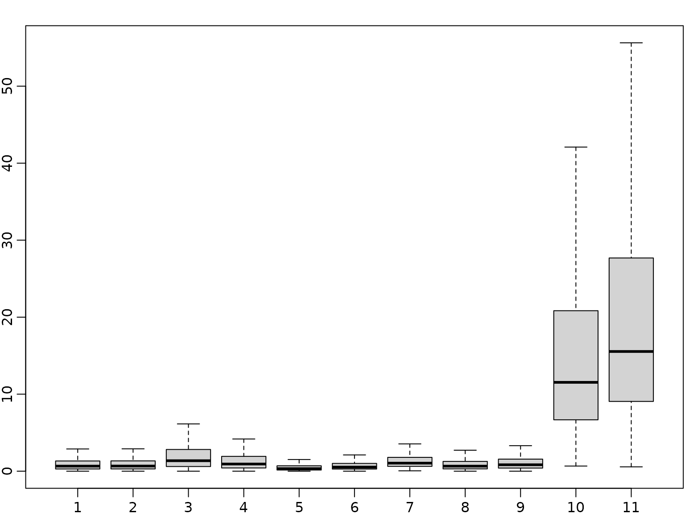
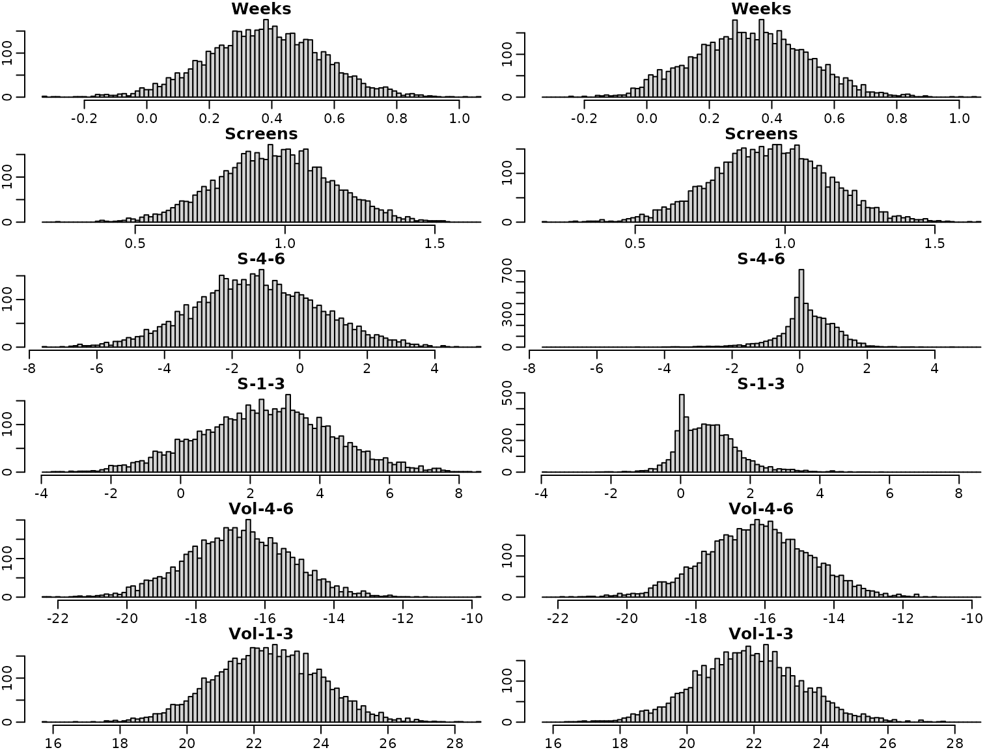
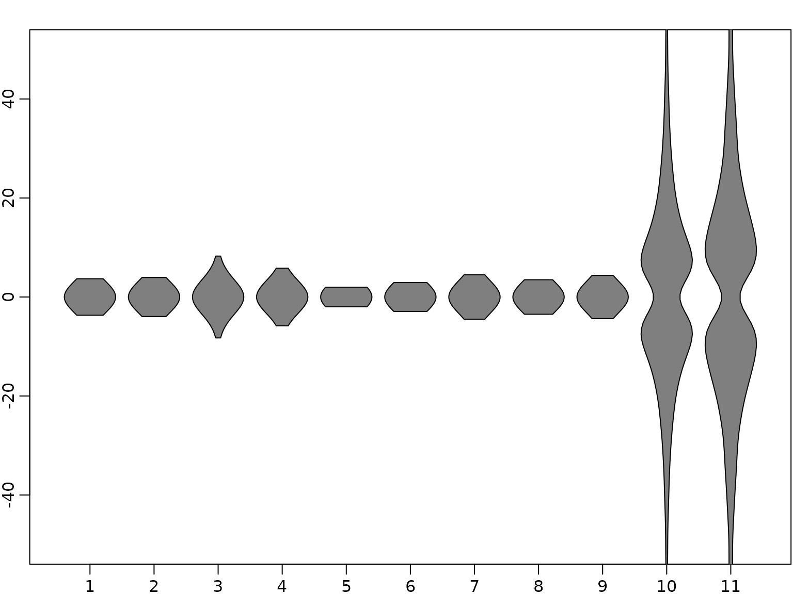

Chapter 6: The Bayesian Approach to Standard Regression Analysis
Chapter06.RmdSection 6.4
Example 6.1/6.2: Movie data
We use movie data provided within the package to illustrate Bayesian analysis of a regression model. The data set is a preprocessed version of the one provided by Lehrer and Xi (2017).
library("BayesianLearningCode")
data("movies", package = "BayesianLearningCode")First of all, as there is only one film of genre G, we set the baseline for the categorical covariate genre to G or PG by removing PG from the data set.
movies["PG"] <- NULLNext, we prepare the variables for regression analysis. We define the
response variable OpenBoxOffice as y and
center the covariates at zero.
y <- movies[, "OpenBoxOffice"]
covs <- c("Comedy", "Thriller","PG13", "R", "Budget", "Weeks", "Screens",
"S-4-6", "S-1-3", "Vol-4-6", "Vol-1-3")
covs.cen <- scale(movies[, covs], scale = FALSE)
N <- length(y) # number of Observations
X <- cbind("Intercept" = rep(1, N), covs.cen) # regressor matrix
d <- dim(X)[2] # number regression effects
p <- d - 1 # number of regression effects without interceptWe first estimate the parameters of the regression model under a rather flat semi-conjugate prior.
set.seed(1)
# define prior parameters of semi-conjugate prior
B0.inv <- diag(rep(1 / 10000, d), nrow = d)
b0 <- rep(0, d)
c0 <- 2.5
C0 <- 1.5
# define quantities for the Gibbs sampler
XX <- crossprod(X)
Xy <- t(X) %*% y
cN <- c0 + N / 2
#define burnin and M
burnin <- 1000
M <- 5000
# prepare storing of results
betas <- matrix(NA_real_, nrow = burnin + M, ncol = d)
sigma2s <- rep(NA_real_, burnin + M)
# starting value for sigma2
sigma2 <- var(y) / 2
for (m in 1:(burnin + M)) {
# sample beta from the full conditional
Bn <- solve(B0.inv + XX / sigma2)
bn <- Bn %*% (B0.inv %*% b0 + Xy / sigma2)
beta <- t(mvtnorm::rmvnorm(1, mean = bn, sigma = Bn))
# sample sigma^2 from its full conditional
eps <- y - X %*% beta
CN <- C0 + crossprod(eps) / 2
sigma2 <- rinvgamma(1, cN, CN)
betas[m, ] <- beta
sigma2s[m] <- sigma2
}To summarize the results nicely we compute equal tailed 95% confidence intervals.
res.mcmc <- function(x, lower = 0.025, upper = 0.975)
c(quantile(x, lower), mean(x), quantile(x, upper))
beta.sc <- betas[burnin + (1:M), ]
res_beta.sc<- t(apply(beta.sc, 2, res.mcmc))
colnames(res_beta.sc) <- c("2.5%", "Mean", "97.5%")
rownames(res_beta.sc) <- c("Intercept", covs)
knitr::kable(round(res_beta.sc, 3))| 2.5% | Mean | 97.5% | |
|---|---|---|---|
| Intercept | 17.455 | 19.100 | 20.719 |
| Comedy | -2.730 | 1.422 | 5.535 |
| Thriller | -4.104 | 0.482 | 4.911 |
| PG13 | -8.412 | -2.756 | 3.008 |
| R | -3.604 | 2.164 | 8.170 |
| Budget | 0.041 | 0.128 | 0.215 |
| Weeks | 0.015 | 0.377 | 0.744 |
| Screens | 0.597 | 0.964 | 1.326 |
| S-4-6 | -4.855 | -1.279 | 2.387 |
| S-1-3 | -1.262 | 2.454 | 6.178 |
| Vol-4-6 | -19.741 | -16.763 | -13.858 |
| Vol-1-3 | 19.377 | 22.400 | 25.422 |
# Error variance estimate with semi-conjugate prior
res_sigma2.sc <- res.mcmc(sigma2s[burnin + (1:M)])
names(res_sigma2.sc) <- colnames(res_beta.sc)
knitr::kable(t(round(res_sigma2.sc, 3)))| 2.5% | Mean | 97.5% |
|---|---|---|
| 47.338 | 63.993 | 87.332 |
Next we use the horseshoe prior to analyze the data. We use the same prior on the intercept and the error variance as above but specify a horseshoe prior on the regression effects. The prior variance of the intercept is set to the same value as in the semi-conjugate prior.
B00.inv <- 1 / 10000 # prior precision for the intercept
# prepare storing of results
betas.hs <- matrix(NA_real_, nrow = burnin + M, ncol = d)
sigma2s.hs <- rep(NA_real_, burnin + M)
tau2s.hs <- matrix(NA_real_, nrow = burnin + M, ncol = p)
lambda2s.hs <- rep(NA_real_, burnin + M)
# set starting values
sigma2 <- var(y) / 2
tau2 <- rep(1, p)
lambda2 <- 1
for (m in seq_len(burnin + M)) {
# sample beta from the full conditional
B0.inv <- diag(c(B00.inv, 1 / (lambda2 * tau2)))
Bn <- solve(B0.inv + XX / sigma2)
bn <- Bn %*% (B0.inv %*% b0 + Xy / sigma2)
beta <- t(mvtnorm::rmvnorm(1, mean = bn, sigma = Bn))
beta.star <- beta[2:d]
# sample sigma^2 from its full conditional
eps <- y - X %*% beta
CN <- C0 + crossprod(eps) / 2
sigma2 <- rinvgamma(1, cN, CN)
# sample tau^2
xi <- rexp(p, rate = 1 + 1 / tau2)
tau2 <- rinvgamma(p, 1, xi + 0.5 * beta.star^2 / lambda2)
# sample lambda^2
zeta <- rexp(1, rate = 1 + 1 / lambda2)
lambda2 <- rinvgamma(1, (p + 1) / 2, zeta + 0.5 * sum(beta.star^2 / tau2))
# store results
betas.hs[m,] <- beta
sigma2s.hs[m] <- sigma2
tau2s.hs[m,] <- tau2
lambda2s.hs[m] <- lambda2
}Again, we show the posterior mean estimates and equal-tailed 95% credibility intervals in a table. First, for the regressions effects.
beta.hs <- betas.hs[burnin + (1:M),]
res_beta.hs <- t(apply(beta.hs, 2, res.mcmc))
colnames(res_beta.hs) <- c("2.5%", "Mean", "97.5%")
rownames(res_beta.hs) <- colnames(X)
knitr::kable(round(res_beta.hs, 3))| 2.5% | Mean | 97.5% | |
|---|---|---|---|
| Intercept | 17.508 | 19.110 | 20.711 |
| Comedy | -1.602 | 0.293 | 2.834 |
| Thriller | -2.297 | 0.040 | 2.401 |
| PG13 | -6.351 | -1.873 | 0.836 |
| R | -1.309 | 0.992 | 5.017 |
| Budget | 0.037 | 0.126 | 0.213 |
| Weeks | -0.002 | 0.332 | 0.684 |
| Screens | 0.578 | 0.950 | 1.318 |
| S-4-6 | -1.648 | 0.224 | 1.674 |
| S-1-3 | -0.544 | 0.775 | 2.821 |
| Vol-4-6 | -19.136 | -16.212 | -13.309 |
| Vol-1-3 | 18.737 | 21.819 | 24.921 |
And for the variance.
# Error variance estimate with horseshoe prior
res_sigma2.hs <- res.mcmc(sigma2s.hs[burnin + (1:M)])
names(res_sigma2.hs) <- colnames(res_beta.hs)
knitr::kable(t(round(res_sigma2.hs, 3)))| 2.5% | Mean | 97.5% |
|---|---|---|
| 47.452 | 63.63 | 85.481 |
We next have a look at the posterior distributions. First under the semi-conjugate priors and then under the horseshoe prior. Note that the posterior distributions are symmetric under the semi-conjugate prior, whereas this is not the case under the horseshoe prior.
for (i in seq_len(d)) {
breaks <- seq(min(beta.sc[,i], beta.hs[,i]), max(beta.sc[,i], beta.hs[,i]),
length.out = 100)
hist(beta.sc[,i], main = colnames(X)[i], breaks = breaks, xlab = "", ylab = "")
hist(beta.hs[,i], main = colnames(X)[i], breaks = breaks, xlab = "", ylab = "")
}
We next investigate the trace plots.

Finally, we have a look at boxplots of the posterior distributions of the (square root of the) local shrinkage parameters under the horseshoe prior.

To sum up, we visualize the posterior of the effects
alpha <- 0.05
truncate <- function(x, alpha) x[x <= quantile(x, 1 - alpha)]
tau2.hs.trunc <- apply(tau2.hs, 2, truncate, alpha = alpha)
tau.hs.trunc.mirrored <- rbind(sqrt(tau2.hs.trunc), -sqrt(tau2.hs.trunc))
vioplot::vioplot(tau.hs.trunc.mirrored, h = 3, pchMed = NA, drawRect = FALSE,
ylim = c(-50, 50))
for (i in seq_len(ncol(beta.hs))) {
breaks <- seq(min(beta.hs[, i]), max(beta.hs[, i]), length.out = 100)
hist(beta.hs[, i], breaks = breaks, xlab = "", ylab = "",
main = c("Intercept", covs)[i])
if (i == 1) {
plot.new()
} else {
breaks <- seq(min(tau.hs.trunc.mirrored[, i - 1]),
max(tau.hs.trunc.mirrored[, i - 1]), length.out = 100)
hist(tau.hs.trunc.mirrored[, i - 1], breaks = breaks, xlab = "", ylab = "",
main = covs[i - 1])
}
}